Susie's Wiki

Sobre
Susie é uma Lightner
de Hometown e uma das deuteragonistas de Deltarune.
Ela é a heroína monstro da Luz na profecia de Deltarune.
Enquanto está em um Mundo Sombrio, ela empunha um machado.
Com seu alto HP e Ataque, ela desempenha o papel de tanque e lutadora principal
do grupo durante os encontros com inimigos.
Recentemente, ela também se tornou a segunda curandeira da equipe.


Design no Overworld
Design no Darkworld
Personalidade
- Gosta de elogios
- Cai no sono fácil
- Costuma fazer comentários brutalmente honestos
- É expressiva
- Adora comer giz
- Pessoas quietas a irritam
Status
Nível
Vida
Ataque
Defesa
Magia
Coragem
1
110
14
2
1
2
2
140
16
2
1
2
3
190
18-19
2
3-4
3
4
230
22-24
2
3-9
4
História
Susie teve um passado difícil, com problemas para fazer amigos e se mudando sempre que conseguia.
Ao chegar em Hometown, Toriel a encontrou chorando sozinha em um banco no cemitério.
Toriel a confortou, disse que tudo ficaria bem e a levou para comer no restaurante.
Atualmente, Susie mora em Hometown e estuda na mesma turma que Kris, para onde se mudou como uma nova aluna.
Ela está à beira de ser expulsa da escola devido a incidentes passados e é temida por seus colegas e até mesmo por Alphys, que a considera uma ameaça.
Monster Kid a descreveu como alguém que os observava de forma assustadora enquanto jogavam handebol.
Em um desses momentos, a bola rolou até ela, que parou por um instante e a chutou com toda a força na direção do carro de Undyne.
Pouco mais se sabe sobre a história de Susie antes dos eventos de Deltarune.
Galeria de Sprites
 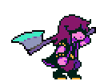
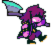
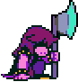
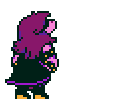
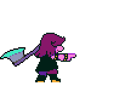
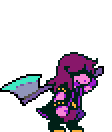
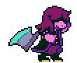
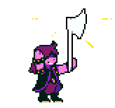
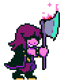
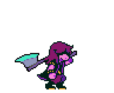
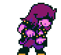
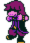
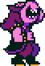
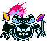
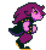
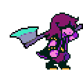
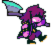
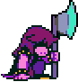
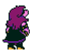
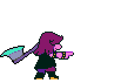
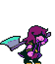
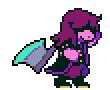
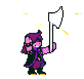
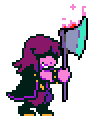
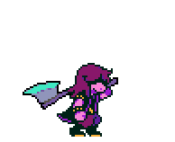
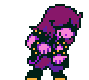
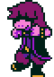
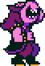
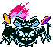
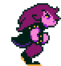
 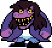
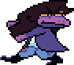
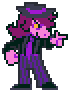
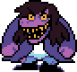
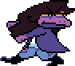
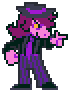